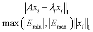

Intel® oneAPI Math Kernel Library Developer Reference - Fortran
Extended Eigensolver interface for standard eigenvalue problem with sparse matrices.
call sfeast_scsrev(uplo, n, a, ia, ja, fpm, epsout, loop, emin, emax, m0, e, x, m, res, info)
call dfeast_scsrev(uplo, n, a, ia, ja, fpm, epsout, loop, emin, emax, m0, e, x, m, res, info)
call cfeast_hcsrev(uplo, n, a, ia, ja, fpm, epsout, loop, emin, emax, m0, e, x, m, res, info)
call zfeast_hcsrev(uplo, n, a, ia, ja, fpm, epsout, loop, emin, emax, m0, e, x, m, res, info)
The routines compute all the eigenvalues and eigenvectors for standard eigenvalue problems, Ax = λx, within a given search interval.
CHARACTER*1
Must be 'U' or 'L' or 'F' .
If uplo = 'U', a stores the upper triangular parts of A.
If uplo = 'L', a stores the lower triangular parts of A.
If uplo= 'F' , a stores the full matrix A.
INTEGER
Sets the size of the problem. n > 0.
REAL for sfeast_scsrev
DOUBLE PRECISION for dfeast_scsrev
COMPLEX for cfeast_hcsrev
COMPLEX*16 for zfeast_hcsrev
Array containing the nonzero elements of either the full matrix A or the upper or lower triangular part of the matrix A, as specified by uplo.
INTEGER
Array of length n + 1, containing indices of elements in the array a , such that ia(i) is the index in the array a of the first non-zero element from the row i . The value of the last element ia(n + 1) is equal to the number of non-zeros plus one.
INTEGER
Array containing the column indices for each non-zero element of the matrix A being represented in the array a . Its length is equal to the length of the array a.
INTEGER
Array, dimension of 128. This array is used to pass various parameters to Extended Eigensolver routines. See Extended Eigensolver Input Parameters for a complete description of the parameters and their default values.
REAL for sfeast_scsrev and cfeast_hcsrev
DOUBLE PRECISION for dfeast_scsrev and zfeast_hcsrev
The lower and upper bounds of the interval to be searched for eigenvalues; emin ≤ emax.
INTEGER
On entry, specifies the initial guess for subspace dimension to be used, 0 < m0≤n. Set m0 ≥ m where m is the total number of eigenvalues located in the interval [emin, emax]. If the initial guess is wrong, Extended Eigensolver routines return info=3.
REAL for sfeast_scsrev
DOUBLE PRECISION for dfeast_scsrev
COMPLEX for cfeast_hcsrev
COMPLEX*16 for zfeast_hcsrev
On entry, if fpm(5)=1, the array x(n, m) contains a basis of guess subspace where n is the order of the input matrix.
On output, the last 64 values correspond to Intel® oneAPI Math Kernel Library PARDISOiparm(1) to iparm(64) (regardless of the value of fpm(64) on input).
REAL for sfeast_scsrev and cfeast_hcsrev
DOUBLE PRECISION for dfeast_scsrev and zfeast_hcsrev
On output, contains the relative error on the trace: |tracei - tracei-1| /max(|emin|, |emax|)
INTEGER
On output, contains the number of refinement loop executed. Ignored on input.
REAL for sfeast_scsrev and cfeast_hcsrev
DOUBLE PRECISION for dfeast_scsrev and zfeast_hcsrev
Array of length m0. On output, the first m entries of e are eigenvalues found in the interval.
On output, the first m columns of x contain the orthonormal eigenvectors corresponding to the computed eigenvalues e, with the i-th column of x holding the eigenvector associated with e(i).
INTEGER
The total number of eigenvalues found in the interval [emin, emax]: 0 ≤ m ≤ m0.
REAL for sfeast_scsrev and cfeast_hcsrev
DOUBLE PRECISION for dfeast_scsrev and zfeast_hcsrev
Array of length m0. On exit, the first m components contain the relative residual vector:

for i=1, 2, …, m, and where m is the total number of eigenvalues found in the search interval.
INTEGER
If info=0, the execution is successful. If info ≠ 0, see Output Eigensolver info Details.